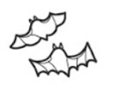

Lab 4 - Learning JavaScript
Challenge
We are writing some pseudocode for a nice activity, my partner Julia and I decided to teach others how to make guacamole and we also made pseudocode for a card-matching video game.
Problems
We were a bit confused about the structure of the pseudocode.
Reflection
Put your reflections about this assignment here. How did it go? What kind of energy did you put into the assignment?
Results
MAKE GUACAMOLE: START // Ingredients SET avocados = 2 (medium-sized) SET onion = 1 (small, diced) SET jalapeño = 1 (medium, minced, leave seeds in) [per Elise’s request] SET cilantro = 1/4 cup (chopped) SET lime = 1 (juiced) SET salt = 1/2 teaspoon (to taste) // Equipment SET cutting board SET knife SET mixing bowl SET fork // Step 1: Prepare the ingredients FUNCTION prepare_ingredients() CUT tomatoes into small pieces DICE onion MINCE jalapeño CHOP cilantro JUICE lime END FUNCTION // Step 2: Combine ingredients FUNCTION combine_ingredients() ADD tomatoes to mixing bowl ADD onion to mixing bowl ADD jalapeño to mixing bowl ADD cilantro to mixing bowl ADD lime juice to mixing bowl ADD salt to mixing bowl END FUNCTION // Step 3: Mix ingredients FUNCTION mix_salsa() USE spoon to mix all ingredients until well combined END FUNCTION // Step 4: Taste and adjust FUNCTION taste_and_adjust() IF guacamole is too spicy THEN ADD more avocados END IF IF more flavor is needed THEN ADD more lime juice or cilantro END IF END FUNCTION // Step 5: Serve FUNCTION serve_guacamole() PLACE guacamole in serving bow ADD pit of avocado to keep fresh SERVE with tortilla chips END FUNCTION // Execute the steps CALL prepare_ingredients() CALL combine_ingredients() CALL mix_guacamole() CALL taste_and_adjust() CALL serve_guacamole() END CARD MATCHING GAME: POSSIBLE CARD ICONS: BAT - PUMPKIN - WITCH-HAT - WEBS  Create user as “Player” and create game as “Computer” One face-down card is displayed in front of the player. Four face-up cards are layered in front of the player's face-down card. Player selects from the four face-up card icons. The player guesses which icon will appear on the face-down card. Face down card flips over to reveal icon. If cards do not match, 1 point is gained for the computer. If cards do not match, the turned over cards reset. If cards do match, player gains one point. If cards do match, the turned over card resets. Point totals are tallied Cards reset and replaced with different order of cards. User wins or loses after 5 turns Game point tallies reset back to 0 and all cards reset IN PSEUDOCODE: 1. // Print the five cards (with each icon) 2. // Accept user input 3. // Validate user move 4.// Evaluate if the cards match 5. // Tally round points 6. // Choose computer move 7. // Test of win or draw condition
// Print the five cards (with each icon)
// Accept user input
// Validate user move
// Evaluate if the cards match
// Tally round points
// Choose computer move
// Test of win or draw condition